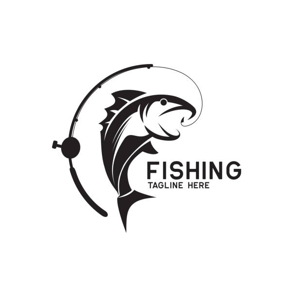

Fishing is a fun activity to do not only as a hobbu but also as a sport, but some people don't know that
fishing comes with responsabilities. The main one is to keep everithing under the law and that is why here
is a
table
of all the salt water fish mesures that you have to lok for.